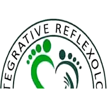
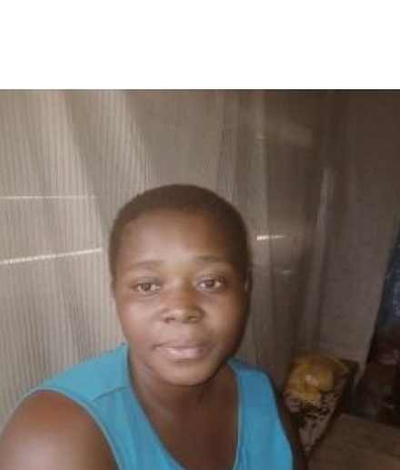
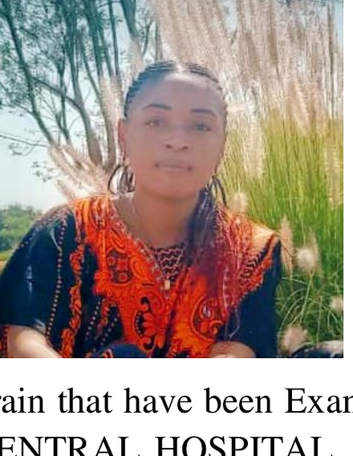
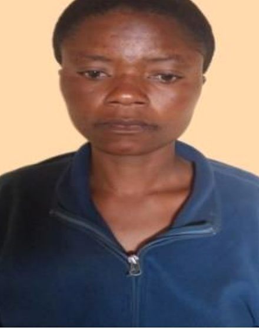

01
Professional Development
Training, capacity building, practitioner support and the promotion of responsible, ethical practice.
Dzaleka Refugee Camp · Malawi
We unite practitioners and advance reflexology as a complementary therapy — with a special focus on vulnerable and underserved communities.
Professional standards
Training, ethics & practitioner support
Community services
Accessible care for vulnerable populations
Women & youth
Skills, confidence & livelihood pathways
Partnerships
Health, humanitarian & development allies
Vision
“To make reflexology an acclaimed complementary therapy.”
Who we are
Reflexologists Association is based in Dzaleka Refugee Camp. We provide oversight and support for practitioners while promoting reflexology as a valuable complementary therapy — especially for people affected by displacement and limited access to supportive services.
We work alongside existing health and psychosocial services, with clear referral pathways when specialised care is required.
Training builds skills and livelihood opportunities — particularly for vulnerable women — while expanding access to supportive care.
Every programme remains grounded in professional standards, ethical conduct, and the dignity of the people we serve.
Vision
To make reflexology an acclaimed complementary therapy.
Mission
To unify and advocate on behalf of reflexology therapists and to promote reflexology as a valuable complementary therapy through holistic support and natural healing processes for human wellbeing, using non-invasive touch therapy to stimulate specific reflex points and support physical, emotional and energetic balance.
Purpose
RA seeks to strengthen the professional identity and responsible practice of reflexology while increasing public awareness of its potential value as a complementary approach to wellbeing. The organisation also seeks to build partnerships and develop specialised programmes, including the Integrative Reflexology Center and allied psychosocial support initiatives for vulnerable populations.
Core values
Responsible, ethical and competent practice.
Dignity, empathy and respect in every interaction.
Learning, dialogue, transparency and collaboration.
People of different backgrounds, experiences and abilities.
Vulnerable and underserved people are not left behind.
Exemplary in service, learning, advocacy and engagement.
Structure
Parent organisation
Institutional identity, governance, strategic direction and professional framework.
Strategic arm
Practical platform through which RA implements programmes and community initiatives.
On the ground
Practical expressions of RA’s mission — services, training, empowerment and partnerships.
Our work
RA’s work spans practitioner support, community services, training, empowerment and partnerships — with the Integrative Reflexology Center as our main delivery platform.
01
Training, capacity building, practitioner support and the promotion of responsible, ethical practice.
02
Reflexology awareness, public sensitisation and supportive wellness activities closer to communities.
03
Platform for training, services, knowledge development, research and community wellbeing.
04
Support for people affected by displacement, poverty, trauma, violence and other forms of vulnerability.
05
Collaboration with authorities, health professionals, organisations and reflexology networks.

Strategic programmatic arm
The Center is how RA turns vision into action. It delivers community services, training, research and empowerment — remaining an integral part of the Association, not a separate organisation.
Reflexology for vulnerable populations in accessible settings.
Capacity building for practitioners and community workers.
Knowledge on reflexology and integrative wellbeing.
Skills, livelihoods and professional opportunities.
International partners contributing expertise.
Partnerships with donors and institutions.
Impact
We measure success by responsible practice, expanded access to supportive wellbeing services, and the empowerment of people — especially women and vulnerable groups.
A message to partners and donors
Our approach does not seek to replace conventional medical or mental-health care.
Rather, RA promotes reflexology as a complementary community-based practice that can work alongside existing health, psychosocial and humanitarian services, with appropriate safeguarding and referral pathways.
Modest equipment and infrastructure requirements.
Relaxation, compassionate connection and structured self-care.
Services brought closer through centres, groups and outreach.
Skills and livelihood opportunities, especially for women.
Complementary care with clear referral pathways.
Community stories
Real experiences shared by people who trained, received care, or found new purpose through the Integrative Reflexology Center.

Practitioner · Dzaleka Refugee Camp
23 · Rwandese refugee · Single mother of two
After difficult years in the camp — including leaving school early and facing hardship as a young mother — Mbabazi joined reflexology training with little confidence. “At the first time, my hands trembled during practice.” Guided by reflexologist Mr. Mikye Wa Byondo, she steadily built skill and began supporting others.
Today she runs a small reflexology booth. Her pain has lessened, her confidence has grown, and she supports her children’s school fees with her earnings. She also encourages other women to learn reflexology.
“The Integrative Reflexology Center gave me more than a skill. It gave me hope, healing, future — and my pain became my gift.”

Family testimony · Congolese community
35 · Congolese · Mother of five
Nyota’s brother, Albert Kasongo, was left with left hemiplegia and related complications after an accident. Major hospitals in Malawi indicated limited local options. The family turned to the Integrative Reflexology Center and Mr. Mikye Wa Byondo.
Albert received care over about a month and recovered sufficiently to return to activities such as playing football. He later resettled in Canada. Nyota describes the care as restoring hope for the family and surprising the wider community.
“We consider Mikye as one of our family members in the way he felt free and gave home care to my brother Albert.”

Host community · Malawian
Malawian · Lilongwe
Grace had struggled with salpingitis for six months in 2020. After limited success elsewhere, she was directed to the Integrative Reflexology Center in Dzaleka by someone who had found help there for kidney-related problems. She was treated by practitioners including Mrs. Francine Faila Tambwe.
She reports recovery within about two weeks and stresses that the Center serves not only refugees but also Malawians — a low-cost, non-invasive complement where health systems are under strain.
“The existence of this Center in the refugee camp improves overall community wellness, not just for refugees but also for the host population.”
Client testimony · Burundian refugee
Burundian · In Malawi since 1994
From 2015, Jean Claude lived with severe low-spine pain for nearly two years, relying on injections and painkillers until resources were exhausted. Lumbago limited his mobility so severely that neighbours eventually called the reflexologist to him at home.
After about three weeks of reflexology care with Mr. Mikye, he reports substantial relief without medication — an outcome he describes as restoring hope after being told he might only wait for the pain to worsen.
“That was my amazing relief through reflexology technique.”
Insights
Stories and field notes from practitioners, clients and host-community partners around Dzaleka Refugee Camp.
Stories
Read experiences from practitioners and clients in Dzaleka and surrounding areas.
Articles
Further reflections on responsible practice and community wellbeing will be shared here.
Contact
Whether you are exploring partnership, seeking information, or have a question — we welcome your message.
Telephone
+265 984 575 479
+265 990 388 543
Location
Dzaleka Refugee Camp
New Katubza–Ubuntu Road
Dowa District, Central Region
Malawi
Postal address
P.O. Box 16
Dowa District
Central Region, Malawi
RA welcomes collaboration with government authorities, health bodies, humanitarian partners, academic institutions, donors and individual supporters.
We welcome collaboration with government, health bodies, humanitarian partners, academic institutions and donors who share our commitment.
Start a conversation